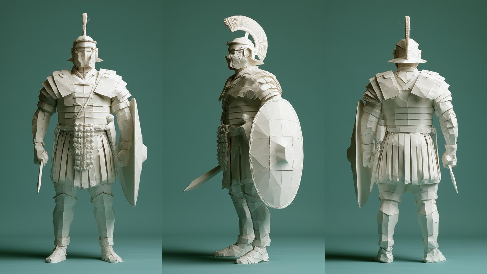
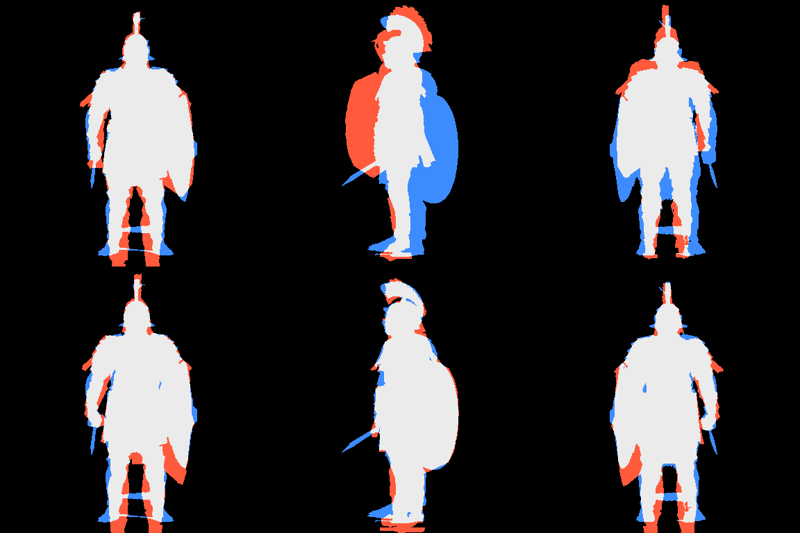
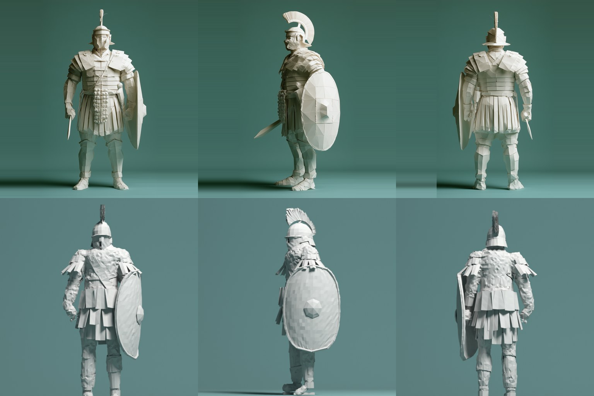
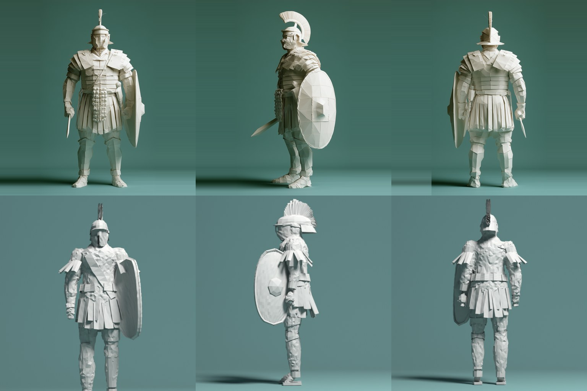
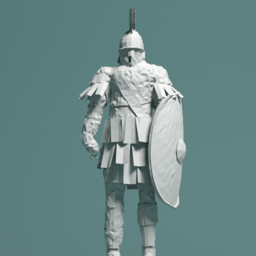
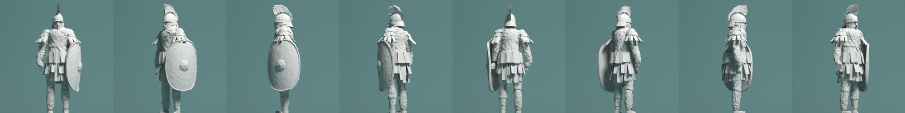
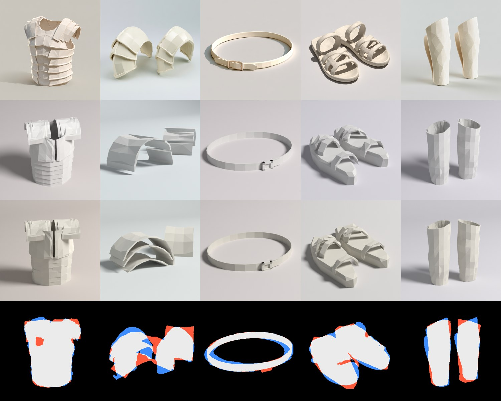
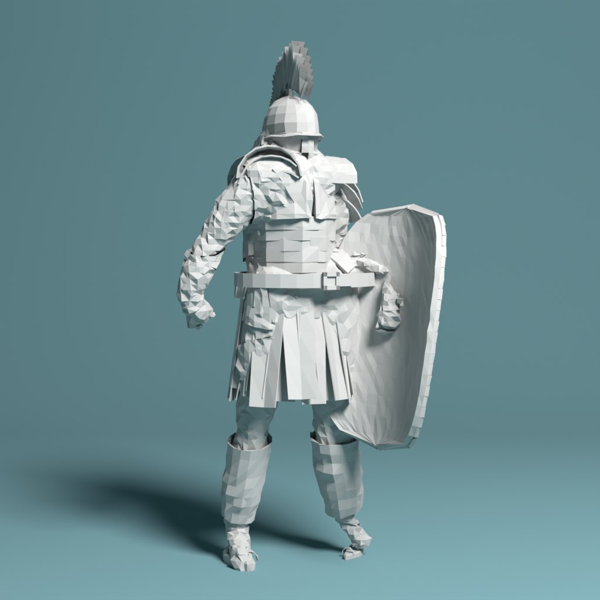
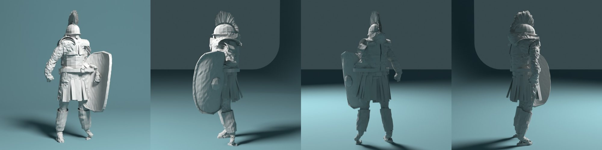

Can one Midjourney image become a game-ready model that is faithfully the same object, not just "inspired by" it? This test case is a folded-paper Roman legionary, taken through three rounds and broken into parts. Every pass is rendered from the reference camera, scored against the image, and logged.
Where it stands: the silhouette, camera, pose and light match well, and round 2 made the figure read as paper rather than clay. It is still a close cousin of the reference, not the same model. A person notices four gaps first: the shield is a flat slab, the crest goes dark from behind, the skirt is thin strips instead of wide tabs, and the face plate is weak (it now has its own study). The props show that the parts approach works, and that each part needs a second round. Round 3 showed that a turnaround sheet fixes shape errors no single view can catch, which makes it the most valuable input so far.
The first question was whether a loop could pull one exact model out of one picture. I wrote one parametric builder for an armoured humanoid, defined a loss against the image, and let an optimizer and three Claude models revise it. It found the pose, camera and light. It did not find the style: the surface came out as noise instead of folds. Round 2 is about that.
Your read of round 1 was that the geometry was good but the art style didn't survive. Three things carry the look:
The bigger point was about architecture. Don't reconstruct the finished model; reconstruct the rules. That means a papercraft construction grammar that could turn any asset into this style, from a knight to a London street. A shader can't fake a folded silhouette, so the rules have to make geometry. You asked for three competing experiments (geometry-first, procedural papercraft and a hybrid) and bet on the hybrid.
You also asked whether the mesh is generated from scratch or optimised from an existing one. It is generated: every piece is Python in Blender, with no third-party mesh anywhere.
A loss that looks where you look. Loss v2 keeps the whole-figure terms and adds 512 px crops of the five parts you named (crest and helmet, shoulders, shield, skirt, legs and feet). Each crop is scored on overlap and structure. It also adds a style term that compares the distribution of edge strength and edge coherence inside the figure. Folded paper is mostly flat planes with a tail of strong, straight creases. Crumple noise is lots of medium, incoherent edges. That term lets the loss tell paper from clay, which round 1's edge term couldn't.
A grammar instead of a model. paper.py holds style rules that run on any mesh, whatever it depicts:
| Rule | What it does | Applied to |
|---|---|---|
facet | Re-triangulates to a target edge length, then crumples by a fraction of the local edge, so the paper reads the same at any scale or detail level | Body skin, trim |
bands | Cuts the surface with straight, tilted planes, splits it along the cuts and lifts alternate bands, so armour reads as overlapping paper strips with clean seams | Torso armour |
plates | Clusters faces into plates, flattens each one, folds a ridge down its middle and overlaps them like shingles | Tried on the torso, then switched off (see below) |
stiffen | Gives sheet parts paper thickness and a slight hand-made twist per piece | Skirt tabs, shoulder flaps |
| material | Matte paper: high roughness, a faint sheen and a tiny fibre bump. No fake folds in the shader. | Everything |
A, geometry-first: refit the plain builder with the part-crop loss and no grammar. B, procedural papercraft: keep round 1's geometry and run it through the grammar. C, hybrid: A's refitted geometry, then B's grammar. All three were judged on the same settings: loss v2, LOD2, 512 px, 48 samples.

| Version | Judged total | Whole silhouette | Crest | Shoulders | Shield | Skirt | Legs | Style |
|---|---|---|---|---|---|---|---|---|
| Round 1 final | 0.447 | 0.148 | 84% | 88% | 88% | 93% | 72% | 0.49 |
| A · geometry-first | 0.365 | 0.105 | 86% | 93% | 92% | 96% | 83% | 0.35 |
| B · papercraft grammar | 0.319 | 0.172 | 83% | 87% | 86% | 91% | 70% | 0.09 |
| C · hybrid | 0.306 | 0.110 | 85% | 94% | 92% | 95% | 81% | 0.19 |
Lower is better for the total, the whole silhouette (1 − IoU) and style. The part columns are silhouette overlap inside each crop, where higher is better.
The numbers say what you predicted. Geometry alone fixes the silhouette but not the look. The grammar alone fixes the look and scores by far the most paper-like, but it sits on round 1's lumpier geometry, so it loses on every part crop. The hybrid keeps nearly all of A's silhouette and most of B's style, and wins overall.


Separating style from shape was the right cut. Once the grammar was its own module, the style term could reward it independently of the silhouette, and the two could be combined without refitting. The part crops did what they were meant to. The shoulders went from 88% to 94% and the legs from 72% to 81%, changes a whole-figure loss had been too coarse to notice.
Clustered plates. My first plate rule grouped faces with k-means and folded each group. The groups follow the triangulation, so the seams came out ragged and stair-stepped, the opposite of a deliberate fold. I replaced it with straight-seam bands. Those are clean, but too subtle at this lift: from the reference camera they barely show.
The shield. It is still a thick slab with a rim. The reference shield is one smooth, curved oval sheet with crisp edge facets. The builder has no single-curved-sheet primitive, so no amount of fitting can reach it.
The crest. It's built from two layers of blades, and from behind the inner faces fall into shadow, so it reads as a dark brush. The reference crest is light from every side.
The skirt. It's many thin strips, where the reference has fewer, wider tabs that overlap. That's as much a parameter-range problem as a builder one.
The loss still prefers some crumple. Even with the style term, the best-scoring version carries more surface noise than I'd ship. The style term measures edge statistics, not whether the edges line up into folds. It judges better than round 1's term, but it isn't the final judge.
A style is a set of construction rules plus a vocabulary of primitives, and the primitives set the ceiling. The grammar can only make the shapes it is allowed to make: a curved sheet, a wide tab, a single-layer crest. The cheapest next win is adding those primitives, not more optimisation. That's also why splitting the character into parts is the right next move: each part needs only a small, specific vocabulary.
Round 1 ended with "one image leaves the back invented." A Midjourney turnaround sheet gave three targets of one figure: front, left side and back. It's a new design in the same paper style, not the original warrior. It's stockier, stands straight, carries a round-oval shield and a short sword, and has a transverse brush crest. So this round tests a different question: what does a second and third view buy?
Two caveats from the sheet itself. The views aren't true orthographic, and the side view is turned a little toward the camera. The fit is allowed to find that turn: it settled at 64° instead of 90°.

Two fits from the same start (round 2's hybrid, reset to a neutral standing pose), with the same budget of about 3,000 evaluations and the same stages: camera, a shield-turn sweep, pose, proportions, parts, then everything. Front-only sees only the front view. Three-view scores the mean of all three. Every candidate in both fits is scored on all three views and logged, so the front-only fit can be judged on views it never saw.
Adding views is cheap. The figure is built once per candidate, and each view only re-aims the camera and rasters a silhouette. Both fits took about 12½ minutes.
| Silhouette loss (lower is better) | Front | Side | Back | All three |
|---|---|---|---|---|
| Start (neutral pose) | 0.224 | 0.373 | 0.226 | 0.274 |
| Front-only fit | 0.105 | 0.407 | 0.198 | 0.237 |
| Three-view fit | 0.121 | 0.094 | 0.106 | 0.107 |

The front-only fit overfits to its one view. It scores best on the front, and its side view ends up worse than where it started (0.373 to 0.407). From the front a shield is just an outline, and turning it to 122° matched that outline. From the side, that same shield sticks out in front of the body like a tray. Depth, the shield's turn and the crest's direction are all invisible from one view, so the optimizer was free to get them wrong.
The three-view fit gives up a little on the front to get everything else right. It's 15% worse on the front view (0.121 against 0.105) and more than twice as good overall. The shield turned to 69° and sits on the left arm, facing out, as in the sheet. The camera search also found the side view's real turn by itself.
Light, paper and backdrop were fitted on all three views at once (16 rounds of three renders each). The front-only model was rendered under the same light, so the comparison is about shape, not lighting.


| Rendered judged loss | Front | Side | Back | Mean |
|---|---|---|---|---|
| Start | 0.385 | 0.503 | 0.366 | 0.418 |
| Front-only, lit | 0.290 | 0.492 | 0.343 | 0.375 |
| Three-view, lit | 0.307 | 0.259 | 0.276 | 0.281 |
Same terms as the props: silhouette, outline distance, structure (SSIM), colour and the style term, scored per view.


It fixed the class of error that cost the most in round 1. The biggest single gain in round 1 was a facing restart I had to make by eye. Here the side and back views settle facing, shield placement and depth by themselves, with no restart and no model call. That makes the turnaround sheet the most valuable input so far. It beats a better optimizer and it beats a more expensive reviser, because it removes a guess instead of searching harder around it.
The look. The renders still show round 2's vocabulary on a new design: thin skirt strips, a crumpled body, and a smooth helmet where the target has a hinged face mask and brow ridge. The structure and style terms barely moved between the two fits (0.264 against 0.266, 0.165 against 0.173), because more views only constrain shape. The style gap is still a primitives gap: lorica bands, wide pteruges, a round shield with a raised rim and a sword all need builder parts that don't exist yet.
Things that aren't in the model at all. The target has a sword and a scaled apron in front. The builder has neither, so both stay blue in every overlay, and the optimizer leans the hand out to cover the sword. That's the same "fat limbs" failure as round 1, at a smaller scale.
The sheet isn't perfectly consistent. Midjourney draws the crest thinner from the back than from the side, and the side view is turned. The fit absorbs the turn as a camera angle, but it can't satisfy a crest that changes size between views. Some of the remaining side and back loss is the target disagreeing with itself.
Make the turnaround the default input for the machine: front, side and back, plus a three-quarter view when the design has an asymmetric part like a shield. Weight the views by how much each one can see. Then spend effort on the primitives the look needs. Geometry is now pinned down well enough that style is the bottleneck.
Your idea was piecemeal design: supply simpler props and make the character composable. Each part gets its own builder in the same paper grammar, its own reference image and loss, and a socket on the body. The helmet became a separate study because the face plate is the hardest single piece.
This is running separately, against your helmet image, with the face plate as the focus. Its results will be added here when it's done.
Each prop has its own builder:
The fit is round 2's recipe in miniature. It tries three camera turns, fits camera and shape on the silhouette for 300 steps, then fits light and paper over 20 renders. Every step goes into the same loss log, about 3,200 evaluations over both fits.
The second fit kept the camera inside a sensible range for each prop, switched to cream paper, rebuilt the pauldrons as three nested domes, and thinned the sandal straps. All five scores went down.

| Prop | Fit 1 | Fit 2 | Read by eye after fit 2 |
|---|---|---|---|
| Greaves | 0.205 | 0.200 | Closest. The shape and facet size are right. The back plate's edge doesn't show, and the colour should be cream. |
| Cuirass | 0.292 | 0.277 | Good outline and hoops. The chest plates split at the centre and the shoulder guards are too flat. The reference hoops are deeper and more stepped. |
| Sandals | 0.298 | 0.279 | Right layout, but the soles are too thick and the straps too chunky and crumpled. The reference straps are clean, smooth loops. |
| Belt | 0.314 | 0.310 | The ring is right, but it's too thin and tilted. The buckle is an H instead of a rectangle with a tongue, and the tail doesn't show. |
| Pauldrons | 0.317 | 0.291 | Biggest change. Now three nested domes, as in the reference, but one cap still drifts away from its pair, and the domes are too flat at the crown. |
Small, specific builders fit fast: each prop took about six minutes with no model calls. Where the builder's vocabulary matches the object, as with the greaves and the cuirass, one pass gets close. Where it doesn't, as with the pauldrons' nested domes and the belt's buckle, the optimizer makes up for it by moving the camera. That's round 1's lesson again at a smaller scale. Two fixes follow. First, lock the camera to a sensible range for each prop. Second, use Opus once per prop to read the reference and choose the builder's structure before any fitting, the "spend the expensive model on judgement" idea from round 1.
Cream paper helped the tone score on every prop, but the gains in the second fit are small (0.004 to 0.026). Most of what is left is structure, not tuning: the belt needs a real buckle and tongue, the cuirass a closed front, and the sandal straps smooth loops. Those are builder changes.
Each second-fit prop is rebuilt and snapped onto the hybrid body. The body's own shoulder flaps and leg bands come off, and the props replace them. A prop isn't sized from the joints alone. It's sized to wrap the actual body mesh: the cuirass to the torso's cross-section, the greaves to the shin's radius, the sandals to the foot. Each prop is also exported as its own GLB with its origin at its socket.


Honest read: the mechanics work. Every part lands on its socket, and the cuirass hoops, the belt and the greaves read clearly. It doesn't look better than the one-piece hybrid yet. The body underneath is still the bulky round-1 mesh, so the props sit on a figure that's too thick. The pauldrons come out small, and the sandals mostly disappear into the feet. The fix is to slim the body into a mannequin that the parts dress, instead of armour layered over armour.
The hybrid warrior is also exported as a kit. It has a body with named socket points (head, chest, waist, hands, shoulders, back, feet) and one GLB per part. Each part's origin sits at its socket, and every part is listed in kit.json with a hash. The props will snap onto these sockets next.

This applies to every round. All code, parameters, GLBs and logs are in the abbiesworld_ios repo under tools/paper-warrior.